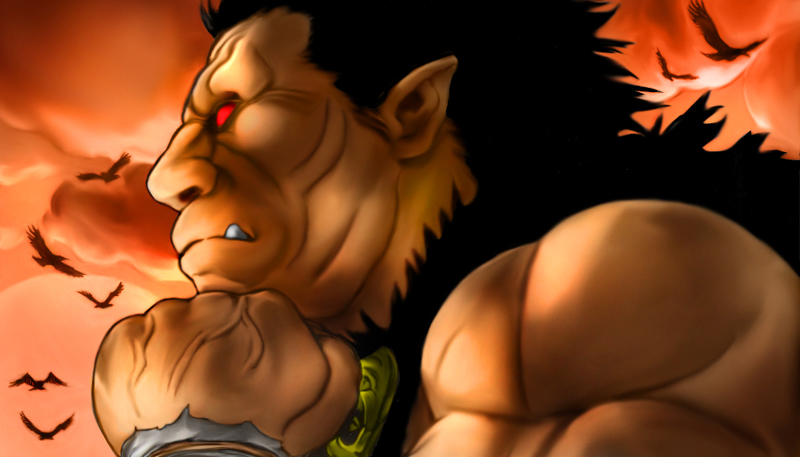

So, here I will try my best to describe ZODDO for you:
Within the story of
Berserk, he is known as Nosferatu Zoddo, and as the legend goes, he has been
fighting in wars for over 300 years. He is thought to be immortal because
of this, and even if witnesses say that he was killed in a battle, he will
always show up time and time again.
He has two forms (Human and Apostle/Beast). He is
already virtually unstoppable in Human form, and can grow 10 times stronger when
he mutates into his Apostle/Beast form. He is a giant mass of muscle and
he wields a large "beheading sword" that contains an eye on the blade.
Zoddo is also basically the right hand of the Son of Evil and is different than
most demons and evil creatures because he demonstrates wisdom and un-surpassing
loyalty. Most of the demons and other Apostles in the story are very
mindless, greedy, disgusting beings. Zoddo, on the other hand is very
"noble". He's basically the bad guy that everyone loves. =)
Here are some manga scans of his Human form:


And just for kicks, here is a cover art of him in his Apostle/Beast form:
Unfortunately, since Berserk is mostly a manga, the pictures are in black and white. Here's a fan-artist that drew his own picture of Zoddo and added color to it as well:
And, here's a reference picture from HEADLONG's very own website:

(You can also view the entire assembled kit here: http://www.geocities.jp/headlong03/ )
Lastly, if you click HERE, this will take you to the prepainted Zoddo: Human Form statue by ART OF WAR, so you can see more images of the color scheme. ART OF WAR is an official statue developer for Berserk and all their sculpts are done under the supervision of Kentarou Miura (the writer & artist of Berserk).
Now, in terms of details, let's start with the sword. The sword that HEADLONG made appears to be Zoddo's older sword, and is NOT the sword that has the eye on the blade. Also, if you notice, the sword on the prepainted Zoddo by ART OF WAR is also the old sword. The old sword is a little boring to me. The sword that Zoddo currently wields is this one:


Notice the little hook/half-circle shape at the end of the blade, the eye and eye brow, and the saw-like look on one edge of the sword. I know you do sculpting as well, so I was wondering if it's possible if you can somehow emulate this sword more, instead of leaving it so plain looking? Will it be hard to make that hook/half-circle shape? Also, will an eye that's simply painted on look awkward unless there's actually some physical altercation on the blade? If these two things require a great deal of effort and time, and you rather not do it, then that is okay. Don't worry about it. I actually just thought of the idea today, and I thought I'd bring it up since it would make the piece more interesting.
In terms of skin color, the color of the skin in the prepainted ART OF WAR statue is pretty cool. Also, the skin color in the fan-picture up above is also pretty accurate. I would prefer the skin color to be something like that, though of course it doesn't have to be exact or anything. On the other hand, the skin color of the actual HEADLONG reference picture, I feel is a little too gray.
With regards to the fur/animal skin (or whatever the hell he is wearing), I don't really care what color it is. I sort of picture it dark in color, like a black, or a gray, or a brown, or something like that. The truth is, I'm not certain EXACTLY what the color of his clothing is simply because all the manga pages are printed in black and white. It's sort of left up to the imagination. As long as you don't paint it bright orange or yellow or something, I think I'll be okay. Hehe. What are your thoughts?
About veins... unfortunately, HEADLONG didn't sculpt any veins on Zoddo's body, like his arms. In the manga, Zoddo constantly has bulging veins all over his body. It would be nice if you could somehow achieve this look (if possible).
And lastly, in regards to blood. I'm not sure how to approach this really. Berserk is FULL of blood. It's a very gory comic. I would really like the statue to be bloody, but at the same time, I'm not sure if lots of blood will look tacky. ART OF WAR often has blood on there "limited edition" variants and I think it looks pretty nice. But, I've seen all your blood textures and paints on your website and I like your blood effects more (it looks more realistic). I would like for you to make the kit/sword bloody, but in terms of HOW bloody it should be, I leave it up to your artistic expertise.
I think that's about all for now. If you have ANY questions, about Zoddo as a character, or about the kit preferences, please let me know. I really want to be able to communicate. Actually, I can't remember if I gave you my phone number last time we talked, so here it is, just in case: 510-847-7062 (cell), and 510-649-7675 (apt).
I look forward to your reply!
Derek
PS:
- FYI, about the progress photos, one of the main reasons why I want them is not because I want to check up on how everything is going, but actually because the whole build-up/painting process really fascinates me. I also plan to put up all the in-progress photos on my website so people can see what you, the artist, went through to achieve the final product.
- I forgot to mention earlier. Please make sure NOT to throw away any of the kit's packaging materials (like the white paper strip that is stapled to the plastic bag, and whatever papers that are inside). I want to keep these as reference and "proof" that this is an original/authentic Japanese kit. Thanks!
- What do you have in mind for the base, or is it too soon to tell?
- I was looking through your website again, and your face/bust paint jobs are AMAZING (like the Phantom one... I can't even look at it because he looks so real and his eyes are SCARY). Anyways, I have this one kit that I think you will be PERFECT for it. It's right up your alley, I think! All the teeth, and everything. =P It looks like this:

A few more Color Zoddo pictures:
